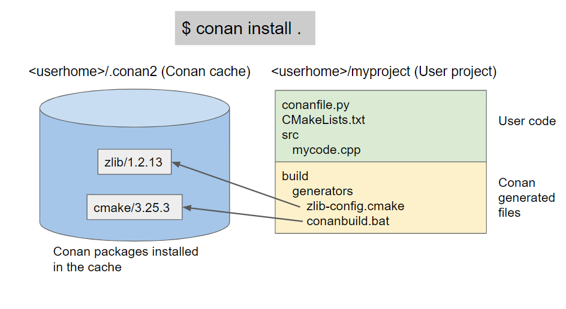

Creating a Conan-agnostic deploy of dependencies for developer use¶
With the full_deploy deployer it is possible to create a Conan-agnostic copy of dependencies that can be used by developers without even having Conan installed in their computers.
The common and recommended flow for most cases is using Conan packages directly from the Conan cache:
However, in some situations, it might be useful to be able to deploy a copy of the dependencies into a user folder, so the dependencies can be located there instead of in the Conan cache. This is possible using the Conan deployers.
Let’s see it with an example. All the source code is in the examples2.0 Github repository
$ git clone https://github.com/conan-io/examples2.git
$ cd examples2/examples/extensions/deployers/development_deploy
In the folder we can find the following conanfile.txt:
[requires]
zlib/1.2.13
[tool_requires]
cmake/3.25.3
[generators]
CMakeDeps
CMakeToolchain
[layout]
cmake_layout
The folder also contains a standard CMakeLists.txt and a main.cpp source file that can create
an executable that links with zlib library.
We can install the Debug and Release dependencies, and deploy a local copy of the packages with:
$ conan install . --deployer=full_deploy --build=missing
$ conan install . --deployer=full_deploy -s build_type=Debug --build=missing
This will create the following folders:
├──src
├──build
│ ├──generators
| └── ZLibConfig.cmake
├──full_deploy
│ ├──build
│ │ └──cmake
│ │ └──3.25.3
│ │ └──x86_64
│ │ ├──bin
│ │
│ └──host
│ └──zlib
│ └──1.2.13
│ ├──Debug
│ │ └──x86_64
│ │ ├──include
│ │ ├──lib
│ └──Release
│ └──x86_64
│ ├──include
│ ├──lib
(Note that you could use the --deployer-folder argument to change the base folder output path for the deployer)
This folder is fully self-contained. It contains both the necessary tools (like cmake executable), the headers and compiled libraries of zlib and the necessary files like ZLibConfig.cmake in the build/generators folder, that point to the binaries inside full_deploy with a relative path.

The Conan cache can be removed, and even Conan uninstalled, then the folder could be moved elsewhere in the computer or copied to another computer, assuming it has the same configuration of OS, compiler, etc.
$ cd ..
$ cp -R development_deploy /some/other/place
$ cd /some/other/place
And the files could be used by developers as:
$ cd build
# Activate the environment to use CMake 3.25
$ generators\conanbuild.bat
$ cmake --version
cmake version 3.25.3
# Configure, should match the settings used at install
$ cmake .. -G \"Visual Studio 17 2022\" -DCMAKE_TOOLCHAIN_FILE=generators/conan_toolchain.cmake
$ cmake --build . --config Release
$ Release\compressor.exe
ZLIB VERSION: 1.2.13
The environment scripts in Linux and OSX are not relocatable, because they contain absolute paths and the sh shell does not have any way to provide access to the current script directory for sourced files.
This shouldn’t be a big blocker, as a “search and replace” with sed in the generators folder can fix it:
$ cd build/Release/generators
# Fix folders in Linux
$ sed -i 's,{old_folder},{new_folder},g' *
# Fix folders in MacOS
$ sed -i '' 's,{old_folder},{new_folder},g' *
$ source conanbuild.sh
$ cd ..
$ cmake --version
cmake version 3.25.3
$ cmake ../.. -DCMAKE_TOOLCHAIN_FILE=generators/conan_toolchain.cmake -DCMAKE_BUILD_TYPE=Release
$ cmake --build .
$ ./compressor
ZLIB VERSION: 1.2.13
Note
Best practices
The fact that this flow is possible doesn’t mean that it is recommended for the majority of cases. It has some limitations:
It is less efficient, requiring an extra copy of dependencies
Only
CMakeDepsandCMakeToolchainare relocatable at this moment. For other build system integrations, please create a ticket in GithubLinux and OSX shell scripts are not relocatable and require a manual
sedThe binary variability is limited to Release/Debug. The generated files are exclusively for the current configuration, changing any other setting (os, compiler, architecture) will require a different deploy
In the general case, normal usage of the cache is recommended. This “relocatable development deployment” could be useful for distributing final products that looks like an SDK, to consumers of a project not using Conan.